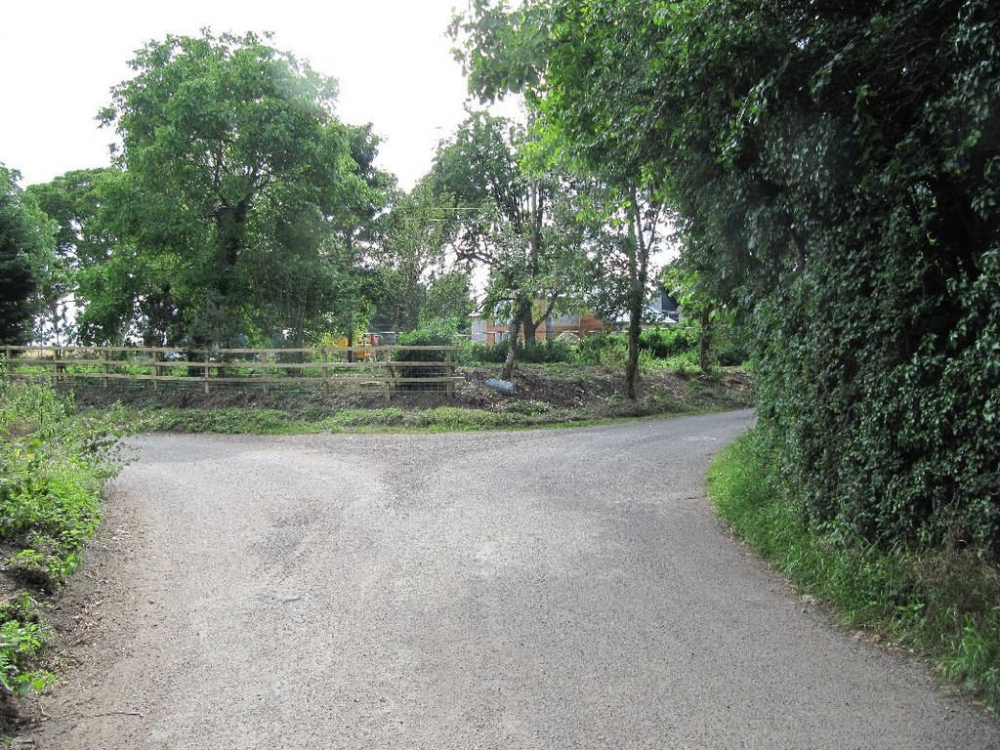
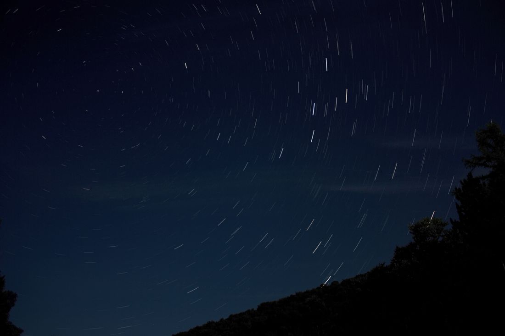
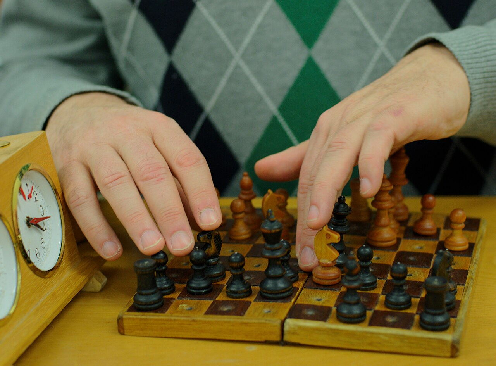
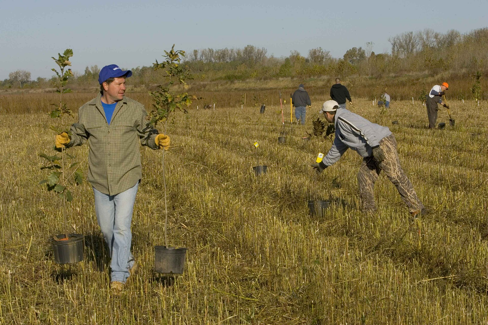
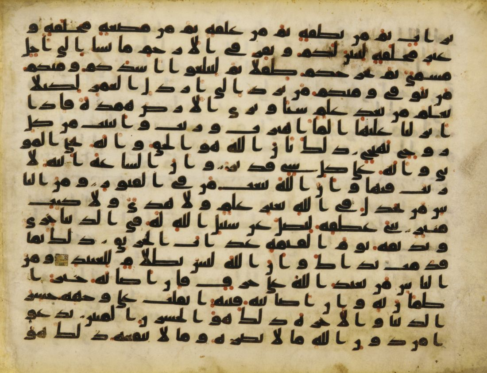
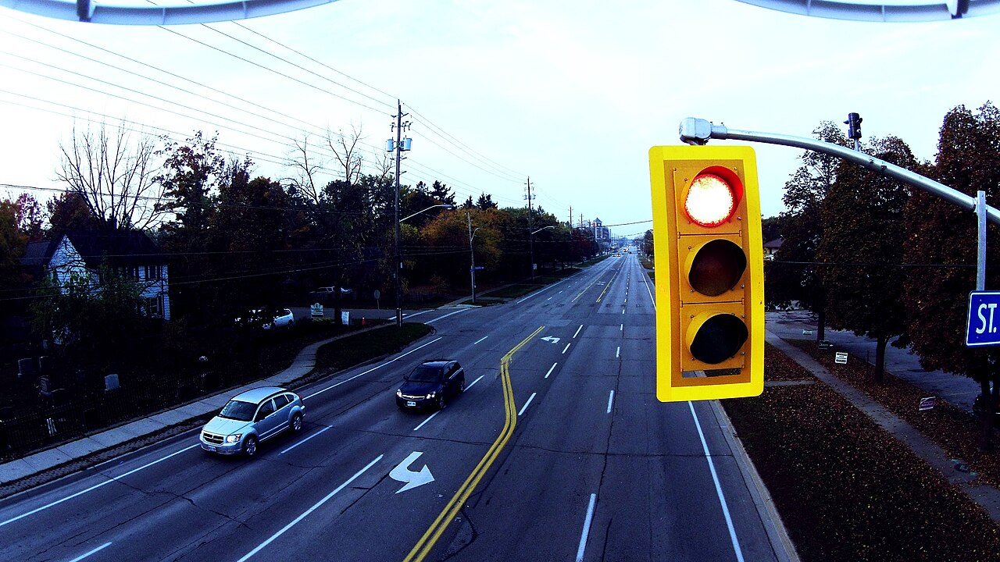
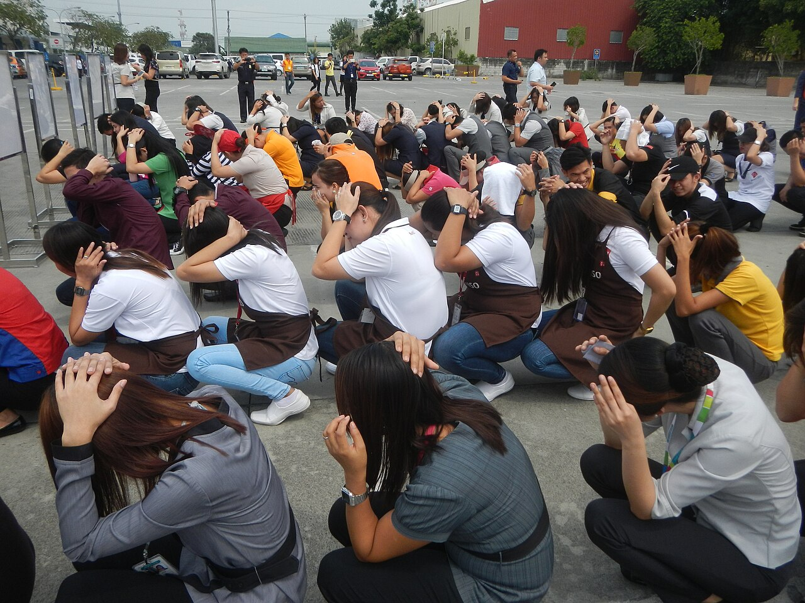

Önce Bak, Sonra Düşün
Bu sayfada her görsel sana bir soru sorar. Önce kendi cevabını yaz; ipucu ancak ondan sonra açılır.

Bu yol ayrımında senin seçebildiğin şey ne, seçemediğin şey ne?
Senin cevabın
İpucu
Yolun orada olması, ormanın büyüklüğü, o günkü hava senin seçimin değildir. Bunlar Allah’ın (cc) takdiri içindedir. Hangi yoldan gideceğin ise senin iradenle yaptığın bir seçimdir.
Yolu seçen kişi yolun sonunu tam olarak göremez. Bu yüzden insan, seçiminden ve seçerken gösterdiği özenden sorumludur. Ünitenin bütün sorusu bu ayrımın içinde saklı.
Allah (cc) olacak her şeyi biliyorsa, ben neden seçimlerimden sorumluyum?
Bu soruya sayfanın sonunda, “Şimdi ne düşünüyorsun?” bölümünde yeniden döneceksin.
Ünite Haritası
Ünitenin konuları, öğrenme çıktıları ve anahtar kavramları.

1.1 · KonuKader ve Kaza İnancı
- Evrendeki ölçü ve düzen
- Kader ve kaza
- Sünnetullah: fiziksel, biyolojik, toplumsal yasalar
- İlim, irade ve kudret sıfatları

1.2 · Konuİnsanın İradesi ve Kader
- Akıl ve irade
- Cüz’i irade – külli irade
- Özgürlük ve sorumluluk
- Yanlış kader anlayışı

1.3 · KonuKaderle İlgili Kavramlar
- Ömür ve ecel
- Rızık
- Tedbir ve tevekkül
- Sağlık, hastalık, başarı
Bir Peygamber Tanıyorum: Hz. Musa (as)
- Firavun’un sarayından peygamberliğe
- Mucizeleri ve mücadelesi
- Sabır, cesaret ve tevekkül

1.5 · KonuBir Ayet Tanıyorum: Ayetelkürsi
- Okunuşu ve anlamı
- Hay ve Kayyum
- Allah’ın ilmi, iradesi ve kudreti
Öğrenme Çıktıları
MEB Türkiye Yüzyılı Maarif Modeli DKAB Öğretim Programı, 8. Sınıf 1. Ünite: Kader İnancı
- DKAB.8.1.1. Allah’ın (cc) her şeyi bir ölçü ve düzene göre yarattığını kader ve kaza inancı bağlamında özetleyebilme
- DKAB.8.1.2. Kaderle ilgili kavramları açıklayabilme
- DKAB.8.1.3. Kader inancının insan davranışına etkisi hakkında düşünebilme
Anahtar Kavramlar
Ünitede geçen ilgili kavramlar:
1.1. Kader ve Kaza İnancı
Bu üç olayın ortak noktası ne?
- Güneşin her sabah doğacağını nasıl bu kadar emin bilebiliyoruz?
- Bir tohum ne zaman, nasıl büyüyeceğini nereden “biliyor”?
Senin cevabın
İpucu
Üçü de bir ölçüye ve düzene göre işliyor. Güneş ve Ay hesaplı hareket eder, tohum belli aşamalarla büyür, su hep aynı sıcaklıkta kaynar. Bu düzeni koyan ve sürdüren Allah’tır (cc). Allah’ın her şeyi bir ölçü ve plana göre belirlemesine kader, belirlenenin zamanı gelince gerçekleşmesine kaza denir.
1.Evrendeki Ölçü ve Düzen
Evrende en küçük hücreden galaksilere kadar var olan her şey bir ölçü ve ahenk içindedir. Bu düzenin devamı, Yüce Allah’ın (cc) dilemesi ve takdiriyle gerçekleşir.
2.Kader ve Kaza
- Kader
- Allah’ın (cc) sonsuz ilmi ve kudretiyle, başlangıçtan sona evrende gerçekleşecek olan her şeyi bir ölçü ve plana göre takdir etmesi.
- Kaza
- Takdir edilen şeyin, zamanı ve yeri geldiğinde Allah (cc) tarafından yaratılması, gerçekleşmesi.
İkisi birbirini tamamlar: Kader bir plan, kaza ise o planın hayata geçmesi gibi düşünülebilir. Kader bir “yazgı hapishanesi” değildir: Allah’ın olacakları bilmesi, insanı bir şeye zorlaması anlamına gelmez.
Örnek: Elinden bıraktığın kalemin yere düşmesi kaza kavramına; kalemi yere çeken yer çekiminin var olması ise kader kavramına örnektir. Kural hep aynı kalır, kuralın her seferinde işlemesi ise tekrar tekrar gerçekleşir.
3.Sünnetullah: Evrendeki Değişmez Yasalar
Allah’ın (cc) evrendeki uyumu sağlamak için koyduğu yasalara sünnetullah (âdetullah) denir. Bu yasalar herkes için ve her zaman aynı şekilde işler; olaylar bir sebep–sonuç ilişkisi içinde gerçekleşir.
Sünnetullah değişmez olduğu için güvenilir bir bilgi kaynağıdır. Bilim de aslında Allah’ın (cc) evrene koyduğu bu yasaları keşfetme çabasıdır. Tohum ekilmeden bitki yeşermez; çalışılmadan başarı gelmez.
4.İlim, İrade ve Kudret
| İlim | İrade | Kudret |
|---|---|---|
| Allah (cc) her şeyi eksiksiz bilir. | Dilediğini dilediği gibi belirler. | Dilediğini yapmaya gücü yeter. |
Allah (cc) sonsuz ilmiyle her şeyi bilir, iradesiyle diler, kudretiyle de dilediğini yaratır. Kader, bu üç sıfatın birlikte tecelli etmesidir.
5.Kaza ve Kadere İman
Kaza ve kadere iman, İslam’ın altı iman esasından biridir. Hz. Peygamber (sav), imanın ne olduğu sorulduğunda Allah’a, meleklere, kitaplara, peygamberlere ve ahiret gününe inanmanın yanında hayrıyla ve şerriyle kadere inanmayı da saymıştır.
Kavramsal Bütünlük
Tek Paragrafta Özet
Evrendeki her şey bir ölçü ve düzen içindedir. Allah’ın (cc) her şeyi sonsuz ilmi, iradesi ve kudretiyle bir ölçü ve plana göre belirlemesine kader; belirlenenin zamanı gelince gerçekleşmesine kaza denir. Allah’ın evrene koyduğu fiziksel, biyolojik ve toplumsal yasalar sünnetullahtır; bu yasalar değişmez ve sebep–sonuç ilişkisi içinde işler. Kaza ve kadere iman, iman esaslarından biridir. Allah’ın her şeyi bilmesi, insanı zorladığı anlamına gelmez.
Bir şeyi önceden bilmek, onu yaptırmak anlamına gelir mi?
Bir yön: Hava durumunu bilen biri yağmuru yağdırmaz. Öğretmen, hiç çalışmayan bir öğrencinin sınavda zorlanacağını tahmin edebilir; ama bu tahmin öğrenciyi çalışmamaya zorlamaz. Allah’ın (cc) ilmi ise bir tahmin değil, kesin bilgidir; yine de bilmek, zorlamak değildir.
Bir Dakika, Gerçekten Öyle mi?
Günlük hayatta sık duyulan altı cümle. Her birine katılıp katılmadığını seç, nedenini yaz, sonra açıklamayı aç. Amaç doğru cevabı bulmak değil, cümledeki kavram karışıklığını fark etmek.
1.2. İnsanın İradesi ve Kader

Kırmızı ışık yanıyor
- Işığın kırmızı yanması kimin seçimi?
- Durmak ya da geçmek kimin seçimi?
- Kırmızıda geçip kaza yapan biri “Kaderimmiş.” diyebilir mi?
Senin cevabın
İpucu
Işığın kırmızı yanması sürücünün seçimi değildir. Durmak ya da geçmek ise onun tercihidir; bu tercih cüz’i iradeyle yapılır. Kural ihlali bir tercih olduğu için sonucunda olan kaza “kader” diye geçiştirilemez. Bu, sorumluluğu kadere yüklemek, yani yanlış kader anlayışıdır.
1.Akıl ve İrade
İnsan, akıllı ve irade sahibi olması bakımından diğer canlılardan farklı yaratılmıştır. Akıl sayesinde düşünür, öğrenir, iyi ile kötüyü ayırt eder; irade ise dileme, tercih etme ve karar verme yeteneğidir.
2.Cüz’i İrade ve Külli İrade
- Cüz’i irade
- Allah’ın (cc) insana verdiği sınırlı tercih özgürlüğü. Ders çalışmak, doğru söylemek, arkadaş seçmek gibi kendi seçimlerimiz.
- Külli irade
- Allah’ın (cc) mutlak ve sınırsız iradesi. Hangi anne babadan doğacağımız, fiziki özelliklerimiz gibi seçemediğimiz her şey.
- 📚 Ödevimi zamanında yapmak
- 🗣️ Doğruyu söylemek
- 🤝 Arkadaşlarımı seçmek
- ⏱️ Boş zamanımı nasıl geçireceğim
- 🏙️ Doğduğum yer
- 👨👩👧 Ailem
- 👁️ Göz rengim
- 📅 Doğduğum yıl
3.Özgürlük ve Sorumluluk
İnsan, külli irade kapsamındaki şeylerden değil, kendi cüz’i iradesiyle yaptığı tercihlerden sorumludur ve bunların hesabını verir. Seçebilme gücü verilmeseydi sorumluluk da olmazdı.
4.Yanlış Kader Anlayışı
Kendi tercihinin sonucunu kadere yüklemek, kaderi çalışmamanın ya da kural çiğnemenin bahanesi yapmak yanlış kader anlayışıdır.
| Yanlış söz | Gözden kaçan |
|---|---|
| “Kısmetimde ne varsa o olur.” (hiç çalışmadan sınava girerken) | Çalışmama kararı kişinin kendi cüz’i iradesiyle verdiği bir karardır. |
| “Alın yazım buymuş, talihim karaymış.” | İnsan kaderi bahane ederek sorumluluktan kurtulamaz. |
| “Kaderimde varmış.” (tedaviyi ihmal ederken) | Hastalık seçilmez; ama tedavi olmak bir tercihtir. |
Kavramsal Bütünlük
Tek Paragrafta Özet
İnsan akıl ve irade sahibi bir varlıktır. Allah’ın (cc) insana verdiği sınırlı tercih özgürlüğüne cüz’i irade, Allah’ın sınırsız iradesine külli irade denir. İnsan, seçemediği şeylerden değil, kendi cüz’i iradesiyle yaptığı tercihlerden sorumludur. Kaderi bahane ederek sorumluluktan kaçmak yanlış kader anlayışıdır.
Amaçtan Sorumluluğa
Bir halkaya dokun: ne anlama geldiği ve LGS’ye hazırlanan bir öğrencideki karşılığı açılır. Kesikli çerçeveli halka insanın tam kontrolünde değildir.
Bugün yaptığın hangi davranış tamamen senin cüz’i iradenle aldığın bir karardı? O kararın sonucundan neden sen sorumlusun?
Bir yön: Kararı verirken başka bir seçeneğin var mıydı? Varsa seçim senindir. Kimse seni zorlamadıysa ve ne yaptığını biliyorsan, sonucunu da üstlenirsin. Sorumluluk, seçebilme gücünün doğal sonucudur.
Karar Anı
Bir durum seç, kararını ver. Seçimin irade, çaba, tedbir, sorumluluk ve tevekkül açısından ayrı ayrı değerlendirilir. Her seçimde neyin güçlü, neyin eksik olduğunu görürsün.
1.3. Kaderle İlgili Kavramlar
Bu hayat çizgisinde hangilerini sen seçersin?
- Çizgideki işaretlerden hangileri senin seçimin?
- Hangileri seçimin dışında kalır ama sana karşı bir tutum almanı ister?
Senin cevabın
İpucu
Doğum yeri, aile, bir hastalık ve ecelin zamanı insanın seçimi değildir. Arkadaşlar, ders çalışma düzeni, alışkanlıklar ve meslek ise cüz’i iradeyle seçilir.
Ama çizgi iki renk değildir: Hastalığı seçmezsin, tedavi olup olmamayı seçersin. İnsan ecelini bilmediği için ömrünün her anında sorumludur.
1.Ömür ve Ecel
- Ömür
- Doğumdan ölüme kadar geçen zaman dilimi.
- Ecel
- Ömrün sona erdiği, Allah (cc) tarafından belirlenmiş an.
İnsan ecelini bilmez; ondan istenen sebeplere uymak ve tedbir almaktır. Emniyet kemeri takmak, sağlıklı beslenmek, hastalanınca tedavi olmak ecele karşı gelmek değil, insanın sorumluluğunu yerine getirmesidir.
2.Rızık
Allah’ın (cc) canlılara verdiği maddi ve manevi bütün nimetlerdir. Rızkı veren Allah’tır; ama rızka ulaşmak için çalışıp çabalamak gerekir, oturup beklemek değil. Rızkı helal yoldan kazanmak ve israf etmemek de sorumluluğumuzdur.
3.Tedbir ve Tevekkül
- Tedbir
- Olası zararlara karşı önceden önlem almak, gereken sebeplere uymak.
- Tevekkül
- Önce üzerine düşeni yapıp tedbir almak, sonra sonucu Allah’a (cc) bırakmak.
Tevekkül “hiçbir şey yapmadan beklemek” değil, “elinden geleni yaptıktan sonra güvenle beklemek”tir. Çiftçi tarlayı sürer, tohumu eker, sular; sonra yağmuru bekler. Tedbir bizden, takdir Allah’tandır.
4.Sağlık, Hastalık ve Başarı
Aynı mantık sağlık, hastalık ve başarı için de geçerlidir: Başarı düzenli çalışmayla gelir; sağlığımızı korumak için önlem alırız; hastalanınca “Kaderimde varmış.” deyip tedaviyi ihmal etmeyiz.
5.Kader İnancının Davranışlarımıza Etkisi
Doğru anlaşılan kader inancı insanı hem başarılı olduğunda kibirlenmekten korur (çünkü başarıyı sağlayan gücün de Allah’tan geldiğini bilir), hem de zorluk anlarında umutsuzluğa düşmekten korur. Kadere iman, güçlü zamanlarda alçakgönüllülük, zor zamanlarda ümit ve teselli kazandırır.
Kavramsal Bütünlük
Tek Paragrafta Özet
Ömür doğumdan ölüme kadar geçen süre, ecel bu sürenin sona erdiği andır. Rızık, Allah’ın (cc) verdiği maddi ve manevi nimetlerdir; ona ulaşmak için çalışmak gerekir. Tevekkül, önce tedbir alıp çalışmak, sonra sonucu Allah’a bırakmaktır. Başarı, sağlık ve tedavi de aynı mantıkla ele alınır. Doğru anlaşılan kader inancı insanı kibirden ve umutsuzluktan korur.
Önce Deveni Bağla
Tedbir ile tevekkül birbirine rakip iki tutum değil, aynı yolun iki adımıdır.

Bu insanlar depremi durduramaz. O hâlde neden tatbikat yapıyorlar?
Senin cevabın
İpucu
Depremin zamanı insanın elinde değildir. Ona hazırlıklı olmak ise elindedir. Tatbikat, sağlam bina, deprem çantası: Hepsi tedbirdir. Tedbiri alıp sonucu Allah’a bırakmak tevekküldür.
Hz. Ömer, veba salgını olan bölgeye girmekten vazgeçince “Allah’ın kaderinden mi kaçıyorsun?” diye sorulmuş; o da “Allah’ın kaderinden yine Allah’ın kaderine kaçıyoruz.” demiştir. Tedbir de kaderin içindedir.
Antrenman yapan gençler
- Aynı çalışan iki sporcudan biri kazanır, diğeri kaybeder. Kaybeden boşuna mı çalıştı?
Senin cevabın
İpucu
Allah evreni sebep–sonuç yasalarıyla (sünnetullah) yaratmıştır. Antrenman başarının sebeplerinden biridir; çaba göstermek kadere karşı gelmek değil, bu yasalara uymaktır. Kaybeden sporcu da boşuna çalışmamıştır: “İnsan için ancak çalıştığı vardır.” (Necm, 39) Ayet sonucu değil çalışmayı öne çıkarır.
Hiç çalışmadan sınavda başarılı olmayı beklemek tevekkül müdür?
Bir yön: Tevekkül, çalışma ve tedbirden sonra gelir. Adımları atlayıp yalnızca beklemek tevekkül değil, tembelliğe verilen güzel bir isimdir.
“Tedbir bizden, takdir Allah’tandır.” sözüyle anlatılmak istenen nedir?
Bir yön: İki liste yap: “Benim elimde olan” ve “Benim elimde olmayan.” İlk listedekileri yapmak tedbirdir; ikinci listeyi Allah’a bırakmak tevekküldür. İkisi birlikte doğru kader anlayışını oluşturur.
Kader mi, Tercih mi?
Kartları doğru alana sürükle. Dokunmatik ekranda ya da klavyede: Önce karta, sonra alanın başlığına dokun. Hepsini yerleştirince “Kontrol et”e bas; her kartın gerekçesi açılır.
Sen Olsaydın?
Kısa olaylar. Ne söyleyeceğini seç, gerekçeni yaz, sonra değerlendirmeyi aç. Kavram kadar, söylediğin sözün karşındaki kişiye nasıl dokunacağı da önemli.
1.4. Bir Peygamber Tanıyorum: Hz. Musa (as)
1.Firavun’un Sarayında Büyüyen Peygamber
Hz. Musa (as) Mısır’da doğduğunda Firavun, İsrailoğullarının erkek çocuklarını öldürtüyordu. Allah’ın (cc) koruması altında nehre bırakılan Hz. Musa, Firavun’un kendi sarayında, öz annesinin bakımıyla büyüdü.
Kavram bağlantısı: Annenin, çocuğunu suya bırakırken Allah’a güvenmesi bir tevekkül örneğidir.
2.Medyen Yılları ve Peygamberlik
Gençliğinde yanlışlıkla bir kavgada bir kişinin ölümüne sebep olunca Medyen’e gitti. Orada kuyudan su çekmekte zorlanan iki kız kardeşe yardım etti ve yıllarca onların babasının yanında çalışarak geçimini sağladı. Dönüş yolunda Allah (cc) onu peygamber olarak görevlendirdi. Hz. Musa, kardeşi Hz. Harun’un kendisine yardımcı olması için dua etti; bu dua kabul edildi.
3.Mucizeler ve Kurtuluş
Firavun’a gittiğinde Allah’ın (cc) izniyle mucizeler gösterdi: Asası yılana dönüştü; Firavun’un topladığı sihirbazlar bile bunun karşısında iman etti. Kızıldeniz kıyısında asasını denize vurunca deniz yarıldı; Hz. Musa ve kavmi kurtuldu, Firavun ve ordusu boğuldu. Hz. Musa’ya (as) Tevrat verildi. Sina Dağı’na gittiğinde Samiri kavmine altından bir buzağı heykeli yaptırdı; Hz. Musa dönünce onları uyarıp tövbeye çağırdı.
| Kıssadaki olay | İlgili kavram |
|---|---|
| Annesinin onu Allah’a güvenerek nehre bırakması | Tevekkül |
| Medyen’de yıllarca çalışarak geçimini sağlaması | Rızık, çaba |
| Güçlü Firavun’a karşı doğruyu tebliğ etmesi | Cesaret, sorumluluk |
| Kardeşi Harun’u yardımcı olarak istemesi | Dua, tedbir |
| Kavminin buzağıya tapmasıyla verdiği mücadele | Sabır, irade |
Tek Paragrafta Özet
Hz. Musa (as), Firavun’un sarayında büyüyüp ona karşı peygamber olarak gönderildi. Kardeşi Hz. Harun ona yardımcı oldu. Allah’ın (cc) izniyle gösterdiği mucizelerle kavmini zulümden kurtardı; kendisine Tevrat verildi. Hayatı; tevekkül, sabır, cesaret ve sorumluluk konusunda örnektir.
Bir insanın kendisinden çok daha güçlü birine “hayır” diyebilmesi için neye ihtiyacı vardır?
Bir yön: Hz. Musa’nın (as) gücü kendi bileğinden değil, doğruluğundan ve Allah’a güveninden geliyordu. Haksız bir duruma sessiz kalmamak, doğruyu söylemek, büyük kıssaların günlük hayattaki küçük karşılığıdır.
1.5. Bir Ayet Tanıyorum: Ayetelkürsi ve Anlamı
1.Ayetelkürsi Nedir?
Ayetelkürsi, Bakara suresinin 255. ayetidir; müstakil bir sure değildir. İçinde “kürsi” kelimesi geçtiği için bu adı almıştır. Ayet, Allah’ın (cc) tek ilah olduğunu, daima diri (Hay) olduğunu ve bütün varlığın idaresini elinde tuttuğunu (Kayyum) anlatır. Farz namazların ardından okunması tavsiye edilir.
2.Okunuşu ve Anlamı
| Okunuşu | Anlamı |
|---|---|
| Allâhü lâ ilâhe illâ hüvel ḥayyül ḳayyûm | Allah’tan başka hiçbir ilah yoktur. O daima diridir (Hay), bütün varlığın idaresini yürütendir (Kayyum). |
| Lâ te’ḫuẕühû sinetüvvelâ nevm | O’nu ne uyuklama tutar ne de uyku. |
| Lehû mâ fissemâvâti vemâ fil ard | Göklerde ve yerde ne varsa hepsi O’nundur. |
| Menẕellezî yeşfeu indehû illâ biiznih | İzni olmadan huzurunda şefaat edecek olan kimdir? |
| Ya‘lemü mâ beyne eydîhim vemâ ḫalfehüm | O, kullarının önlerinde ve arkalarında ne varsa hepsini bilir. |
| Velâ yuḥîtûne bişey’im min ilmihî illâ bimâ şâ’ | Onlar ise O’nun dilediği kadarından başka ilminden hiçbir şey kavrayamazlar. |
| Vesia kürsiyyühüs semâvâti vel ard | O’nun sonsuz kudreti, gökleri ve yeri kaplar. |
| Velâ yeûdühû ḥıfzuhümâ | Onları görüp gözetmek O’na ağır gelmez. |
| Vehüvel aliyyül azîm | Gerçekten yüce ve büyük olan yalnızca O’dur. |
3.Ayetin Mesajları ve Kader Konusuyla Bağlantısı
| Ayetteki ifade | Mesajı | Kader konusuyla bağlantısı |
|---|---|---|
| “O’nu ne uyuklama tutar ne de uyku.” | Allah (cc) hiçbir an dikkatsiz kalmaz, yorulmaz. | Evrendeki düzen bir an bile sahipsiz değildir. |
| “Önlerinde ve arkalarında ne varsa hepsini bilir.” | Allah’ın ilmi her şeyi kuşatır. | Kader, Allah’ın (cc) ilmine dayanır. |
| “Göklerde ve yerde ne varsa hepsi O’nundur.” | Her şeyin gerçek sahibi Allah’tır. | Rızık ve nimetlerin sahibi O’dur. |
| “Kudreti gökleri ve yeri kaplar.” | Allah’ın gücü sınırsızdır. | Kader, Allah’ın (cc) kudretinin tecellisidir. |
Tek Paragrafta Özet
Ayetelkürsi, Bakara suresinin 255. ayetidir. Allah’ın (cc) tek ilah olduğunu, daima diri (Hay) ve her şeyin idarecisi (Kayyum) olduğunu, ilminin ve kudretinin her şeyi kuşattığını anlatır. Bu yönüyle kader konusunun temelini kurar: Her şeyin sahibi O’dur ve her şeyi bilir. Farz namazlardan sonra okunması tavsiye edilir.
Kavramlar
Ünitedeki temel kavramlar. Aramak için yazmaya başla.
📜 Ayet/Hadis → 🧠 Kavram
Metni oku ve hangi kavramı anlattığını bul. Ezberden değil, metinden çıkar. Her cevabın ardından neden doğru olduğunu gör.
Ölçme ve Değerlendirme
Her bölümü doldurup “Kontrol et” düğmesine bas. Daha fazla soru için Konuyu Öğren sayfasındaki konu testlerine ve Değerlendirme sayfasına bakabilirsin.
Allah (cc) olacak her şeyi biliyorsa, ben neden seçimlerimden sorumluyum?
Başta yazdığın cevap: —
Ünitenin cevabı: Allah’ın (cc) bilmesi bir zorlama değildir. Allah insana akıl ve cüz’i irade vermiştir; insan seçimini kendisi yapar ve seçiminden sorumludur. Seçemediği şeylerden değil, gücünün yettiği ve kendi iradesiyle yaptığı tercihlerden sorumludur. Başta yazdığınla şimdi yazdığını karşılaştır: Ne değişti?
Dönem Yazılıları
Sıradaki adım: Oyun Merkezi
Ünitenin dijital oyunları ve sınıf içi etkinlikleri.